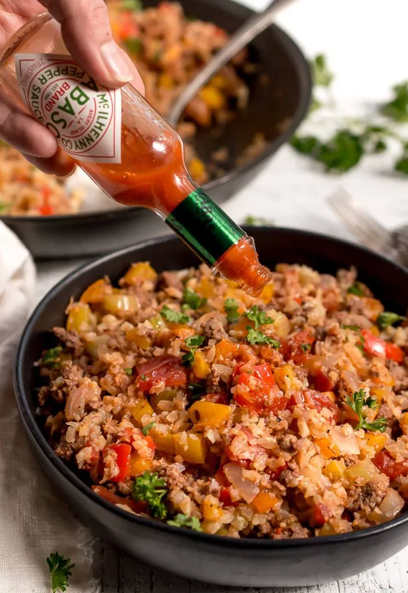

Cajun Ground Beef

Description
For meal-prepping, food that is filling but low in calories is typically desired;
for such meals, a lean ground beef is a great option. Using this recipe, we can turn something that
is usually dry and tasteless into something that you may even be craving on a cheat day!
Ingredients
- 1 TBSP Butter
- 1 Whole Diced Onion
- 1 Whole Diced Jalapeno
- 1 Sausage Diced (I like H-E-B Jalapeno Cheddar Sausage)
- 1/2 Cup Chicken Broth
- Spinach as Preferred
- 16 oz 96% Lean Ground Beef
- 1 TBSP Garlic Powder
- 1/2 TBSP Cajun Seasoning
- 1/2 TBSP Black Pepper
Steps
- Melt butter in Pan - Add Onions and Jalapenos
- Add Diced Sausage and Cook for a Few Minutes
- Add Chicken Broth and Spinach
- Add Ground Beef and Mix in All the Seasonings
- Once Beef is Cooked Thoroughly, Eat with Rice or Your Preferred Side